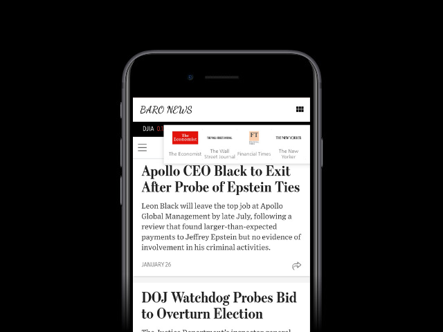
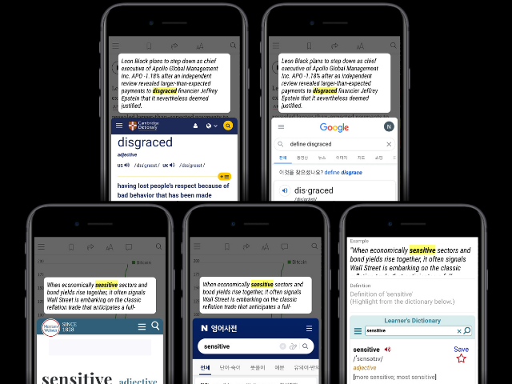

영자신문으로
공부하는 영어공부 필수앱
우물안 개구리를 벗어나고 싶으신가요?
해외 외신/저널을 읽어야 하는데 너무 어려우시죠?
바로뉴스가 영자신문을 술술 읽게 해드릴게요.
바로뉴스를 통해 실제로 영자신문을 즐기고 있습니다.
김ㅇㅇ
저는 현재 미국 실리콘밸리에서 마케터로 일하고 있어요.
‘바로 뉴스’에서 영자신문을 읽으면서 단어를 외웠고,
3달만에 영자신문 읽기가 재밌어졌어요.
이ㅇㅇ
저는 영국으로 유학을 준비하고 있어요.
‘바로 뉴스’에서 영자신문을 읽으면서 단어를 외웠고,
3달만에 영자신문 읽기가 재밌어졌어요.
정ㅇㅇ
저는 통/번역사로 현업에 있어요.
‘바로 뉴스’에서 영자신문을 읽으면서 단어를 외웠고,
3달만에 영자신문 읽기가 재밌어졌어요.
구독중인 외신/저널/매거진을
선택하세요.
이제 여러분은 영자신문을 즐길 수 있게 될 거에요.


영자신문에서 모르는 단어를
간편하게 검색하세요.
다양한 사전(Cambridge, Google, Learner's dictionary, Merriam-Webster, Naver)을 한번에 이용하세요.
모르는 단어를 저장해
똑똑하게 외우세요.
뇌의 망각주기를 이용해 플래시 카드로 단어를 외우세요.

자주 묻는 질문
바로 뉴스는 영자 신문에서 쉽게 단어를 검색할 수 있도록 도와주는 단어 검색 엔진입니다.
만약 여러분이 모르는 단어를 검색하면, 여러분에게 다양한 영영사전 및 영한사전을 제공하여 궁금한 단어를 검색해주고 원하는 문장으로 저장할 수 있게 합니다.
모든 사람들이 스마트폰에서 더 나은 방법으로 영자 신문을 읽을 수 있도록 도와줍니다. 특히, 영어권 국가에서 일하거나 통번역가 그리고 유학 준비생에게 큰 도움이
됩니다.
현재 무료로 이용가능합니다.
현재 안드로이드 스마트폰에서 이용가능합니다.
바로뉴스가 영자신문을 술술 읽게 해드릴게요.
바로뉴스
문의전화: 010-9288-4754